용접기사 (2015-03-08 기출문제)
1과목: 기계제작법
1. 강판의 두께가 2mm, 최대 전단 응력이 440MPa 인 재료에 지름이 24mm인 구멍을 뚫을 때 펀치에 작용되어야 하는 힘[N]은 약 얼마인가?
- 44766
- 51734
- 66317
- 72197
(정답률: 80%)

2. 가스용접장치에 있어서 안전기의 역할은?
- 역화 방지
- 산소의 누설방지
- 산소압력의 조정
- 아세틸렌가스의 누설방지
(정답률: 76%)
3. 다이캐스팅의 장점이 아닌 것은?
- 정도가 높고 주물표면이 깨끗하다.
- 대량생산으로서 단가를 줄일 수 있다.
- 얇은 주물 구도가 가능하여 제품을 경량화 할 수 있다.
- 다이의 내열강도 때문에 용융점이 높은 금속에 적합하다.
(정답률: 76%)
4. 레이저(laser) 가공에 대한 특징으로 틀린 것은?
- 직진성과 질이 매우 좋은 단색광이다.
- 파형 특성이 좋아 시간에 따른 변화가 거의 없다.
- 초경합금, 스테인리스 가공은 불가능한 단점이 있다.
- 목재나 종이, 반도체 기판, 세라믹 판의 절단이 가능하다.
(정답률: 84%)
5. 전주(電鑄)가공 특징으로 틀린 것은?
- 전착속도가 느리고, 가공시간이 길다.
- 복잡한 형상, 중공축 등을 가공 할 수 있다.
- 모형과의 오차를 작게 할 수 있어 가공 정밀도가 높다.
- 모형 전체면에 균일한 두께로 전착이 쉽게 이루어진다.
(정답률: 60%)
6. Ms점 이하인 100~200℃에서 향온 유지한 후에 공랭하는 열처리로서 오스테나이트에서 마텐자이트와 베이나이트의 혼합조직을 얻는 열처리 방법은?
- 마퀜칭(marquenching)
- 마템퍼링(martempering)
- 오스템퍼링(austempering)
- 타임 퀜칭(time quenching)
(정답률: 58%)
7. 방전가공 전극재료 중 구리와 비교한 흑연(graphite)의 장ㆍ단점이 아닌 것은?
- 전극소모가 적다.
- 방전 가공속도가 빠르다.
- 절삭, 연삭가공시 칩이 날린다.
- 비중이 높고 전극 중량이 무겁다.
(정답률: 52%)
8. 드릴지그 구성 3대 요소가 아닌 것은?
- 측정 장치
- 클램프 장치
- 공구 안내 장치
- 위치 결정 장치
(정답률: 69%)
9. 용접부 검사 중 침투탐상법의 순서로 옳은 것은?
- 세척 → 현상 → 침투 → 검사
- 침투 → 세척 → 현상 → 검사
- 세척 → 침투 → 현상 → 검사
- 현상 → 세척 → 침투 → 검사
(정답률: 72%)
10. 롤이 상하 좌우로 설치되어 있어 소재의 상하면과 좌우측면을 동시에 가공할 수 있는 압연기는?
- 링 압연기
- 유성 압연기
- 스테겔 압연기
- 만능 압연기
(정답률: 84%)
11. 주물표면에 금속편을 붙여 급랭하면 표면의 경도가 증가되어 내마모성과 내압성을 향상 시킨 주조는?
- 칠드 주조
- 연속 주조
- 진공 주조
- 인베스트먼트 주조
(정답률: 87%)
12. 이미 치수를 알고 있는 표준 값과의 편차를 구하여 치수를 알아내는 측정방법은?
- 절대 측정
- 비교 측정
- 간접 측정
- 직접 측정
(정답률: 92%)
13. 구성인선(built up edge)에 관한 설명으로 옳은 것은?
- 윗면 경사각을 크게 하면 구성인성의 발생이 증가한다.
- 절삭깊이를 작게 하면 구성인성의 발생이 증가함다.
- 고속으로 절삭할수록 구성인성의 발생이 감소한다.
- 칩의 흐름에 대한 저항이 클수록 구성인성의 발생이 감소한다.
(정답률: 90%)
14. 물리적인 표면 경화법이 아닌 것은?
- 화염 경화법
- 고주파 경화법
- 금속 침투법
- 쇼트 피닝법
(정답률: 80%)
15. 치직각 모듈 3, 잇수 36, 나선각 30° 인 헬리컬 기어의 외경은 약 몇 [mm]인가?
- 101
- 111
- 121
- 131
(정답률: 27%)
16. 전조가공의 설명으로 틀린 것은?
- 숙달된 기능이 불필요하다.
- 소재가 소성변형으로 경화된다.
- 나사, 기어, 볼, 링을 가공할 수 있다.
- 금속조직의 흐름선이 절단되어 피로강도와 경도가 증대된다.
(정답률: 44%)
17. 직선 왕복운동을 하는 램의 공구대에 고정된 바이트에 대하여 공작물을 직각방향으로 이송시켜 평면, 측면, 경사면, 홈을 가공하는 공작기계는?
- 선반(lathe)
- 셰이퍼(shaper)
- 밀링 머신(milling machine)
- 브로칭 머신(broaching machine)
(정답률: 56%)
18. 철(Fe)의 재결정 온도로 옳은 것은?
- 180~200℃
- 350~450℃
- 800~900℃
- 1600~1800℃
(정답률: 53%)
19. 래핑(lapping)의 특징으로 틀린 것은?
- 래핑 가공면은 내식성과 내마멸성이 좋다.
- 거울면과 같은 매끈한 가공면을 얻을 수 있다.
- 가공면에 랩제가 잔류하여 제품의 부식을 막아준다.
- 평면도, 진원도, 진직도 등 기하학적 정밀도가 높은 제품을 제작할 수 있다.
(정답률: 74%)
20. 합금주절에 첨가되는 원소의 영향으로 틀린 것은?
- Cr : 경도, 내열성, 내부식성이 증가한다.
- v : 흑연을 조대화시키고 흑연화를 촉진시킨다.
- Mo : 흑연화를 방지하며, 경도를 증가시킨다.
- Ni : 얇은 부분의 칠(chill) 발생을 방지한다.
(정답률: 68%)
2과목: 재료역학
21. 그림과 같은 보에서 발생하는 최대굽힘 모멘트는?
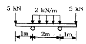
- 2kNㆍm
- 5kNㆍm
- 7kNㆍm
- 10kNㆍm
(정답률: 60%)
22. 최대 굽힘모멘트 8kNㆍm를 받는 원형단면의 굽힘응력을 60MPa로 하려면 지름을 약 몇 cm로 해야 하는가?
- 1.11
- 11.1
- 3.01
- 30.1
(정답률: 54%)
23. 길이가 L인 균일단면 막대기에 굽힘 모멘트 M이 그림과 같이 작용하고 있을 때 막대에 저장된 탄성 변형 에너지는? (단, 막대기는 굽힘강성 EI는 일정하고 단면적은 A이다.)
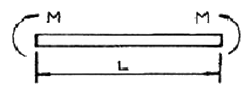
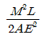
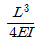
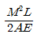
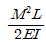
(정답률: 50%)
24. 그림과 같이 두께가 20mm, 외경이 200mm인 원관을 고정벽으로부터 수평으로 4m만큼 돌출시켜 물을 방출한다. 원관내에 물이 가득차서 방출될 때 자유단이 처짐은 몇 mm인가? (단, 원관 재료의 탄성계소 E = 200헴, 비중은 7.8 이고 물의 밀도는 100kg/m3이다.)
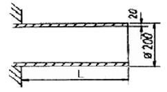
- 9.66
- 7.66
- 5.66
- 3.66
(정답률: 32%)
25. 비틀림 모멘트를 T, 극관성 모멘트를 IP, 축의 길이를 L, 전단 탄성계수를 G라 할 때, 단위 길이당 비틀림각은?
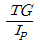
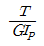
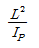
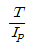
(정답률: 75%)
26. 2축 응력에 대한 모어(Mohr)원의 설명으로 틀린 것은?
- 원의 중심은 원점의 상하 어디라도 놓일 수 있다.
- 원의 중심은 원점좌우의 응력축상에 어디라도 놓일 수 있다.
- 이 원에서 임의의 경사면상의 응력에 관한 가능한 모든 지식을 얻을 수 있다.
- 공액응력 σn 과 σn'의 합은 주어진 두 응력의 합 σx+σy와 같다.
(정답률: 47%)
27. 직경이 d이고 길이가 L인 균일한 단면을 가진 직선축이 전체 길이에 걸쳐 토크 t0가 작용할 때, 최대 전단응력은?
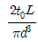
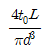
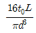
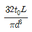
(정답률: 54%)
28. 지금 10mm 스프링강으로 만든 코일스프링에 2kN의 하중을 작용시켜 전단 응력이 250MPa을 초과하지 않도록 하려면 코일을 지름을 어느 정도로 하면 되는가?
- 4cm
- 5cm
- 6cm
- 7cm
(정답률: 41%)
29. 주철제 환봉이 축방향 압축응력 40MPa가 모든 방경방향으로 압축응력 10MPa를 받는다. 탄성계수 E=100헴, 포아송비 v=0.25, 환봉의 직경 d=120mm, 길이 L=200mm일 때, 실린더 체적의 변화량 △V는 몇 ㎣인가?
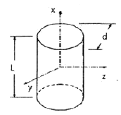
- -212
- -254
- -428
- -679
(정답률: 20%)
30. 그림과 같이 자유단에 M=40Nㆍm의 모멘트를 받는 외팔보의 최대 처짐량은? (단, 탄성계수 E=200 GPa, 단면2차 I=50cm4)
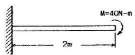
- 0.08cm
- 0.16cm
- 8.00cm
- 10.67cm
(정답률: 32%)
31. 안지름 1m, 두께 5mm의 구형 압력 용기에 길이 15mm 스트레인 게이지를 그림과 같이 부탁하고, 압력을 가하였더니 게이지의 길이가 0.009mm 만큼 증가했을 때, 내압 p의 값은? (단, E=200GPa, v=0.3)
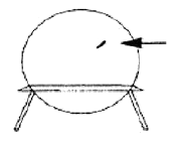
- 3.43 MPa
- 6.43 MPa
- 13.4 MPa
- 16.4 MPa
(정답률: 36%)
32. 포아송의 비 0.3, 길이 3m인 원형단면의 막대에 축방향의 하중이 가해진다. 이 막대의 표면에 운주방향으로 부탁된 스트레인 게이지가 -1.5×10-4의 변형률을 나타낼 때, 이 막대의 길이 변화로 옳은 것은?
- 0.135mm 압축
- 0.135mm 인장
- 1.5mm 압축
- 1.5mm 인장
(정답률: 40%)
33. 지금이 25mm이고 길이가 6m인 강봉의 양쪽 단에 100kN의 인장력이 작용하여 6mm가 늘어났다. 이 때의 응력과 변형률은? (단, 재료의 선형 탄성 거동을 한다.)
- 203.7MPa, 0.01
- 203.7kPa, 0.01
- 203.7MPa, 0.001
- 203.7kPa, 0.001
(정답률: 70%)
34. 다음 그림 중 봉속에 저장된 탄성에너지가 가장 큰 것은? (단, E=2E1 이다.)
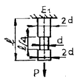
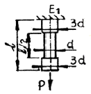
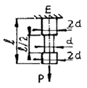
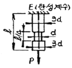
(정답률: 58%)
35. 그림과 같은 트러스에서 부재 AB가 받고 있는 힘의 크기는 약 몇 N정도인가?
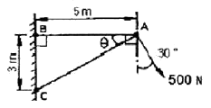
- 781
- 894
- 972
- 1081
(정답률: 54%)
36. 안지름이 80mm, 바깥지름이 90mm이고 길이가 3m인 좌굴 하중을 받는 파이프 압축 부재의 세장비는 얼마 정도인가?
- 100
- 103
- 110
- 113
(정답률: 38%)
37. 균일 분포하중(q)을 받는 보가 그림과 같이 지지되어 있을 때, 전단력 선도는? (단, A지점은 핀, B지점은 롤러로 지지되어 있다.)
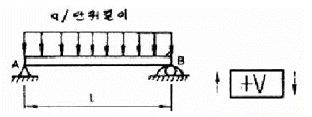
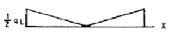
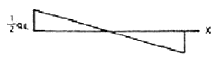
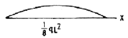
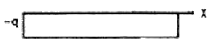
(정답률: 77%)
38. 탄성(elasticity)에 대한 설명으로 옳은 것은?
- 물체의 변형율을 표시하는 것은?
- 물체에 작용하는 외력의 크기
- 물체에 영구변형을 일어나게 하는 성질
- 물체에 가해진 외력이 제거되는 동시에 원형으로 되돌아가려는 성질
(정답률: 77%)
39. 높이 h, 폭 b인 직사각형 단면을 가진 보 A와 높이 b, 폭 h인 직사각형 단면을 가진 보 B 의 단면 2차 모멘트의 비는? (단, h=1.5b)
- 1.5:1
- 2.25:1
- 3.375:1
- 5.06:1
(정답률: 53%)
40. 그림과 같이 전길이에 걸쳐 균형 분포하중 w를 받는 보에서 최대처짐 δmax를 나타내는 식은? (단, 보의 굽힘강성 EI는 일정하다.)
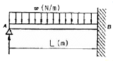
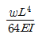
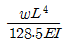
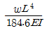
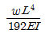
(정답률: 39%)
3과목: 용접야금
41. 용접부이 용융금속에 산소가 혼합 되었을 때의 영향으로 옳은 것은?
- 강도 저하, 취성 저하, 용접성 향상
- 강도 증가, 용접성 향상, 취성 저하
- 비금속 개재물 제거, 취성 증가, 강도 증가
- 합금원소의 소모, 비금속 개재물 생성, 취성 증가
(정답률: 80%)
42. 철의 자기적 성질이 변하는 변태점(168℃)을 무엇이라고 하는가?
- 페라이트(ferrite)
- 큐리점(curie point)
- 시멘타이트(cementite)
- 펄라이트(pearlite)
(정답률: 80%)
43. 경도 시험 방법 중 일정한 높이에서 시험편을 낙하시켰을 때 반발되는 높이로부터 값이 결정되어 경도를 측정하는 것은?
- 쇼어경도
- 로크웰경도
- 브리넬경도
- 비커스경도
(정답률: 83%)
44. 철강조직으로서 오스테나이트를 매우 천천히 냉각하여 얻어지는 α-철과 시멘타잍의 혼합조직은?
- 펄라이트(pearlite)
- 페라이트(ferrite)
- 베이나이트(Bainite)
- 트루스타이트(Troostite)
(정답률: 46%)
45. 치환형 고형체를 형성하는 인자에 대한 설명으로 옳은 것은?
- 결정격자형이 동일하지 않아야 한다.
- 용질의 원자각가 용매의 것보다 작아야 한다.
- 용질원자와 용매원자의 전기저항의 차가 커야 한다.
- 용질과 용매원자의 지름 차가 용매원자 지금의 5%이내 이어야 한다.
(정답률: 75%)
46. 재결성 온도가 가장 낮은 금속은?
- W
- Cu
- Sn
- Ni
(정답률: 48%)
47. 구리에 납을 20~40% 배합한 합금으로 자동차, 항공기의 베어링 등에 사용되는 합금은?
- 켈멧합금
- CA합금
- 콜손합금
- 호이슬러합금
(정답률: 87%)
48. 순철의 동소체가 아닌 것은?
- α철
- β철
- γ철
- δ철
(정답률: 70%)
49. 스테인리스강(18 Cr-8 Ni)의 용접 후 열영향부에 발생하는 부식현상에 관한 설명으로 옳은 것은?
- 냉각속도가 빠르기 때문
- 용접열로 인하여 크롬이 산화되기 때문
- 크롬이 입계에 탄화물을 형성하기 때문
- 용접열로 인하여 탄소함량이 높아지기 때문
(정답률: 52%)
50. 용융점이 가장 낮은 금속은?
- Fe
- Cu
- Ni
- Mg
(정답률: 67%)
51. 용착금속에 인장강도는 증가시키나 연신율과 충격치를 저하시키며 뜨임취성이 원인이 되는 것은?
- N
- O
- H
- S
(정답률: 43%)
52. 용접의 품질을 가장 나쁘게 하는 것은?
- 용접이 끝난 후 피닝처리 하였다.
- 열영향부의 경화를 방지하기 위해 급량시켰다.
- 용접부의 변형을 방지하기 위해 도열법을 사용하였다.
- 고급 내열 합금(Ni 또는 Co)강을 예열 후 용접하였다.
(정답률: 96%)
53. 금속의 응고 순서로 옳은 것은?
- 결정핵 발생→결정의 성장→결정립 형성
- 결정핵 발생→결정립 형성→결정의 성장
- 결정립 형성→결정핵 발생→결정의 성장
- 결정의 성장→결정핵 발생→결정립 형성
(정답률: 67%)
54. 금속재료의 강화 방법이 아닌 것은?
- 고용강화
- 풀림처리
- 가공경화처리
- 입자분산강화
(정답률: 78%)
55. 금속결정의 전위 형태가 아닌 것은?
- 인상전위
- 나선전위
- 굽힘전위
- 혼합전위
(정답률: 72%)
56. 용접에 의한 피로수명 단축을 최소화시키기 위한 방안이 아닌 것은?
- 용접부의 편석을 최소화한다.
- 용접부의 언더컷, 오바랩을 제거한다.
- 용접부와 열영향부의 잔류응력을 최소화한다.
- 용접부의 취약점을 보완하기 위해 표면덧붙이를 최대한 크게 한다.
(정답률: 100%)
57. 용접부 조직 중 상온에서 가장 불안정한 조직은?
- 베이나이트(Bainite)
- 페라이트(Ferrite)
- 마텐자이트(Martensite)
- 잔류 오스테나이트(Retain Austenite)
(정답률: 78%)
58. 탈산제의 원료로 적합하지 않은 것은?
- 페로망간
- 일미나이트
- 페로실리콘
- 알루미늄 분말
(정답률: 74%)
59. 큰 강재를 열처리할 때 표면에서 내부 중심까지의 열처리효과의 차이가 생기는 것은?
- 시효효과
- 취성효과
- 질량효과
- 코트렐효과
(정답률: 80%)
60. 용융금속의 응고 시에 응고된 금속 내부가 부위에 따라 각각 다소 다른 화학성분의 농도를 가지게 되는 현상은?
- 공석
- 포정
- 편석
- 포석
(정답률: 81%)
4과목: 용접구조설계
61. 용접부의 열응력을 구하려고 할 때 관계가 없는 것은?
- 영률(E)
- 온도차(△T)
- 단면적(A)
- 선팽창계수(α)
(정답률: 72%)
62. 용접부의 크기나 구속도 및 용접부재의 흡수상태에 따른 용접조건 까지 고려하여 용접부의 균열 발생 가능성을 평가하는 방법은?
- 탄소량
- 탄소 당량
- 용접균열지수
- 용접균열감수성지수
(정답률: 64%)
63. 금속 표면에 소성 변형을 주어 잔류 응력을 완화시키는 방법은?
- 품림(annealing)
- 피닝(peening)
- 노칭(notching)
- 그라인딩(grinding)
(정답률: 60%)
64. AW-400인 용접기 20대를 설치하고자 하는 공장에는 어느 정도의 전원 변압기를 설비해야 하는가? (단, 400A의 개로 전압은 80V이고, 사용률은 50%, 용접기의 평균사용 전류는 200A이다.)
- 120 KVA
- 140 KVA
- 160 KVA
- 180 KVA
(정답률: 72%)
65. 다음 중 가장 미세한 누설을 검지할 수 있는 검사는?
- 수압 누설검사
- 공기압 누설검사
- 유압 누성검사
- 헬륨 누설검사
(정답률: 66%)
66. 용접하지 않은 모재도 시험할 수 있는 방법으로 시험편을 굽혀 용접부의 연성이나 균열을 조사하는 시험법은?
- 킨젤시험(kinZel test)
- 리하이시험(lehigh test)
- 천이시험(transition test)
- CTS시험(controlled thermal severity test)
(정답률: 75%)
67. 용접부의 피로 시험에 사용하는 하중이 아닌 것은?
- 정 하중(Static load)
- 단진 하중(Pulsation load)
- 왕복 하중(Repeated load)
- 반보 하중(Reversed load)
(정답률: 52%)
68. 코발트60(Co60)에서 방출되는 것 중 비파괴검사에서 사용되는 것은?
- 알파선
- 점자선
- 베타선
- 감마선
(정답률: 63%)
69. 용접균열의 발생위치에 다른 분류가 아닌 것은?
- 용접금속
- 열영향부
- 용접변형부
- 모재의 원질부
(정답률: 38%)
70. 용접 설계상 주의사항으로 틀린 것은?
- 용접하기 쉽도록 설계한다.
- 용접 길이는 가능한 한 길게 한다.
- 용접 이음이 한 곳으로 집중되지 않게 한다.
- 반복 하중을 받는 이음에서는 특히 이음 표면을 편편하게 한다.
(정답률: 86%)
71. 용접 변형 중 면내에 발생하는 변형이 아닌 것은?
- 횡수축
- 종수축
- 회전변형
- 각변형
(정답률: 79%)
72. 방사선투과검사에서 투과도계의 역할은?
- 방사선투과 사진 상의 질을 평가하기 위한 게이지
- 필름의 질을 향상시키기 위한 게이지
- 명암도를 자동으로 조절하는 게이지
- 결함의 크기를 조정하는 게이지
(정답률: 78%)
73. 두께 6mm의 얇은 판으로 내주 압력을 받는 용기의 동체를 제작할 경우 동체의 직경이 50mm이고, 내부압력이 100N/mm2일 때 동체에 작용하는 응력은?
- 406.7 N/mm2
- 416.7 N/mm2
- 426.7 N/mm2
- 436.7 N/mm2
(정답률: 53%)
74. 잔류응력을 경감시키는 방법으로 틀린 것은?
- 적당한 예열을 한다.
- 용착 금속량을 적게 한다.
- 적당한 용접 순서를 선택한다.
- 용접물을 고정시켜 변형을 방지한다.
(정답률: 90%)
75. 용접부 부근의 냉각속도에 관한 설명으로 틀린 것은?
- 후판의 냉각속도는 박판 때보다 빠르다.
- 구리는 연강보다 열전도율이 크므로 냉각속도가 빠르다.
- 맞대기 용접이음 보다 T형 필릿 용접이음이 냉각 속도가 느리다.
- 열량을 일정하게 할 경우 열전도율이 클수록 냉각 속도가 빠르다.
(정답률: 81%)
76. 용접이음 설계시 일반적으로 주의사항으로 옳은 것은?
- 용접작업에 지장을 주지 않도록 충분한 공간을 두어야 한다.
- 용접은 맞대기 용접을 피하고 될 수 있는 대로 필릿 용접을 하도록 한다.
- 판두께가 다를 대에는 경가 테이퍼 없이 얇은 쪽에 용접 홈을 만들어 용접을 하도록 한다.
- 용접선은 될 수 있는 한 교차 되도록 하고 한쪽으로 집중되게 접금하여 설계한다.
(정답률: 89%)
77. 저수조계 용접봉(E4316)에 대한 설명으로 틀린 것은?
- 용착금속은 강인성이 풍부하고 내 균열성이 우수하다.
- 용접봉은 사용하기 전에 300~350℃ 정도로 1~2시간 정도 건조시켜 사용한다.
- 피복제 중에 산화티탄(TiO2)을 약 35% 정도 포함한 용접봉으로서 슬래그 생성계이다.
- 용착금속 중의 수소함량이 다른 용접봉에 비해 1/10 정도로 현저하게 적다.
(정답률: 84%)
78. 용접기호의 표시 방법에 포함되지 않는 것은?
- 홈의 형상
- 홈의 각도
- 용접선의 길이
- 용접 설계법
(정답률: 83%)
79. 용접성 시험의 종류 중 표준용접성 시험에 해당되지 않는 것은?
- 조성 분석 시험
- 용접 작업성 시험
- 용접 균열 시험
- 용접 연성 시험
(정답률: 42%)
80. 용접 변형을 억제하는 인자와 관계가 없는 것은?
- 구속 지그 적용법
- 용접기의 정격용량
- 가용접의 크기와 피치
- 부재 치수나 이음의 주변지지 조건
(정답률: 71%)
5과목: 용접일반 및 안전관리
81. MIG 용접으로 알루미늄을 용접 할 경우 어떤 가스를 사용해야 하는가?
- CO2
- Ar+He
- Ar+O2
- Ar+N
(정답률: 86%)
82. 스터드 용접기에서 용접 토치의 구성을 바르게 설명한 것은?
- 용접 토치는 끝에 콘택트 팁과 스터드를 끼울 수 있는 스터드 척과 내부에는 전극봉, 스프링, 전자석 및 안내 튜브 등으로 구성
- 용접 토치는 끝에 전압조정장치를 부착할 수 있는 척과 내부에는 폐룰을 누르는 안내깃, 노즐 및 스위치 등으로 구성
- 용접 토치는 끝에 폐룰 척과 내부에는 전극홀더를 누르는 레바, 튜브 전자석 및 스위치 등으로 구성
- 용접 토치는 끝에 스터드를 끼울 수 있는 스터드 척과 내부에는 스터드를 누르는 스프링, 전자석 및 스위치 등으로 구성
(정답률: 66%)
83. 후열의 목적이 아닌 것은?
- 슬래그 생성방지
- 기계적 성질의 향상
- 잔류응력의 완화
- 균열의 방지
(정답률: 96%)
84. 가스절단에 관한 설명으로 틀린 것은?
- 팁의 종류에는 동심형과 이심형이 있다.
- 모재온도가 높을수록 고속절단이 가능하다.
- 아세틸렌가스의 순도에 영향이 적다.
- 산소의 순도(99%)가 높으면 절단속도가 느리다.
(정답률: 69%)
85. 산소 - 아세틸렌 가스불꽃의 최고온도(℃)범위로 가장 적당한 것은?
- 2000~2500℃
- 3000~3500℃
- 4000~4500℃
- 5000~5500℃
(정답률: 84%)
86. 다음 중 용착효율이 가장 높은 용접법은?
- 서브머지드 아크 용접
- FCAW 용접
- TIG 용접
- 피복 아크 용접
(정답률: 75%)
87. 아크 절단법에 속하지 않은 것은?
- 플라스마 제트 절단
- 금속아크절단
- 아크에어가우징
- 수중절단
(정답률: 52%)
88. 용접에서 역률(power factor)을 구하는 식은?
- 역률(%)=[개회로 전압(V)/아크 전압(V)]×100
- 역률(%)=[아크 발생시간(min)/작업시간(min)]×100
- 역률(%)=[소비전력(kW)/전원입력(kVA)]×100
- 역률(%)=[정격아크 전류(A)/실제 아크 전류(A)]×100
(정답률: 56%)
89. 산소와 아세틸렌을 다량으로 사용할 때 매니폴드(Manifold) 장치를 성치하는데 있어서의 고려사항이 아닌 것은?
- 용기의 교환주기
- 순간 최대 사용량
- 필요한 산소병의 수
- 산소-아세틸렌의 혼합비
(정답률: 50%)
90. 아크용접에서 위빌비드(weaviong bead)의 위빙 촉은 용접봉 지금의 몇 재로 하는 것이 좋은가?
- 2~3배
- 4~5배
- 6~7배
- 8~9배
(정답률: 85%)
91. 흉(fume) 및 분진(dust)에 의한 재해로 가장 거리가 먼 것은?
- 금속산화물의 미립자를 흡수하여 발생하는 것으로 발열성 질환이다.
- 용접 시 발생하는 중금속이 원인이 된다.
- 증상이 중복도리 경우 적혈구 수가 일시적으로 증가한다.
- 흄(fume)을 흡수한 후 수 시간 후에 발열이 일어나 38~40℃의 고열이 발생한다.
(정답률: 70%)
92. 정격 2차 전류 300A, 정격 사용률 40%인 아크 용접기를 사용하여 실제 150A로 용접한다면 허용 사용률(%)은?
- 60
- 80
- 120
- 160
(정답률: 67%)
93. 납땜 작업시 사용하는 용제(flux)가 갖추어야 할 조건에 대한 설명으로 틀린 것은?
- 용제의 유효온도 범위가 납땜온도 보다 낮을 것
- 납땜 후 슬래그의 제거가 용이할 것
- 모재나 땜납에 의한 부식 작용이 최소한 일 것
- 청정한 금속면의 산화를 방지할 것
(정답률: 100%)
94. 용접 중 용착금속의 용입 부족 현상 방지 대책으로 옳은 것은?
- 용접속도를 빨리한다.
- 개선각도를 크게 한다.
- 아크길이를 길게 한다.
- 루트 간격을 좁힌다.
(정답률: 60%)
95. 전원이 없는 야외에서 차축이나 레일의 접합을 위해 사용하는 용접법은?
- 테르밋용접
- 일랙트로 슬래그 용접
- 가스압접법
- 업셋 용접
(정답률: 91%)
96. 플라스마 아크의 종류에 해당되지 않는 것은?
- 이행형 아크
- 단락형 아크
- 비이행형 아크
- 중간형 아크
(정답률: 61%)
97. 불활성 가스 텅스텐 아크 용접의 특징으로 틀린 것은?
- 슬래그 제거가 불필요하고 깨끗한 비드를 얻을 수 있다.
- 후판 용접에서는 다름 아크용접에 비해 능률이 높다.
- 가스용접의 용착부에 비해 연성, 강도, 내식성이 우수하다.
- 플럭스가 불필요하여 비철금속 용접이 용이하다.
(정답률: 67%)
98. 작업장에서의 통행과 운반에 대한 설명으로 틀린 것은?
- 통행로 위의 높이 2m이하에서는 장해물이 없을 것
- 기계와 다른 시설물과의 사이의 통행로 폭은 80cm 이상으로 할 것
- 각 단계의 간격과 넓이는 다르게 해야 하며 한곳에 손잡이를 설치할 것
- 높이 5m를 초과할 때에는 높이 5m 마다 계단실을 설치할 것
(정답률: 72%)
99. 용접전류가 200A, 아크전압 20V, 용접속도가 10cm/min인 경우 용접입열은 몇 joule/cm인가?
- 240000
- 24000
- 2400
- 240
(정답률: 86%)
100. 가스용접 작업 중 점화 시에 폭음을 발생시키는 원인이 아닌 것은?
- 아세틸렌의 순도가 높다.
- 혼합가스의 배출이 불완전하다.
- 산소와 아세틸렌 압력이 부족하다.
- 가스 분출 속도가 부족하다.
(정답률: 65%)
전단 응력 = 힘 / (두께 x 단면적)
단면적 = π x (반지름)^2
구멍의 지름이 24mm 이므로, 반지름은 12mm 이다.
단면적 = π x (12mm)^2 = 452.39mm^2
최대 전단 응력 = 440MPa
2mm 두께에서의 최대 전단 응력은 최대 허용 전단 응력과 같으므로, 440MPa 로 계산할 수 있다.
440MPa = 힘 / (2mm x 452.39mm^2)
힘 = 440MPa x 2mm x 452.39mm^2 = 66,317N
따라서, 정답은 "66317" 이다.